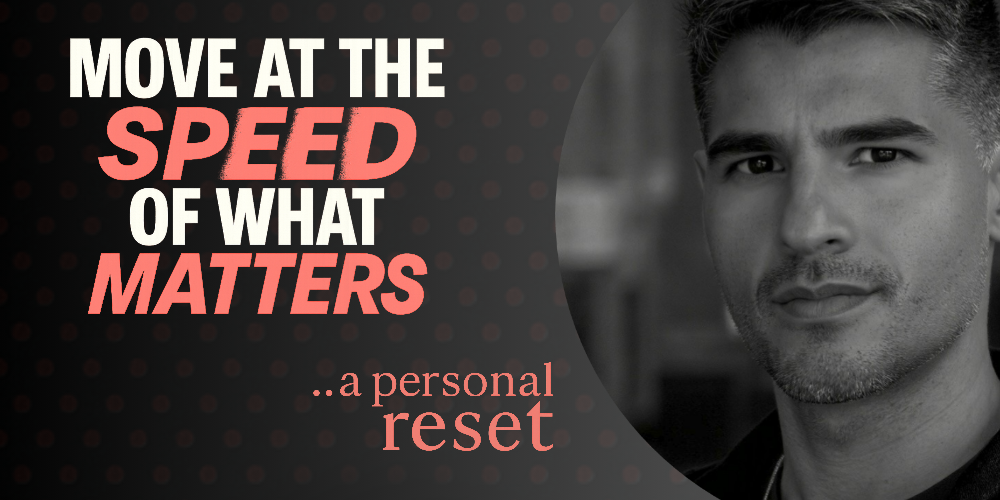

If there's one thing I've learned in this season of reinvention, it's that every setback (whether you want it or not) comes with a syllabus. It's a curriculum you don't ask for, but one that teaches you more than any title ever could, if you're willing to lean in and listen. I've leaned in; with curiosity, resilience, and experience that turned reflection into reinvention.
My time at Microsoft will always be formative in shaping me; strategically, creatively, and as a leader. But it was what came next, during a season of unexpected pause and reinvention, that really taught me about myself.
After years of working in digital with high-impact campaigns and telling stories at scale, I found myself in an unexpected career pivot. Not by choice; perhaps by design. This was time off and on at the same time. Time to get quiet and curious, clear and intentional. I broke the spell of productivity and reconnected with my own creative rhythm by starting to ask questions: About what's possible, what kind of projects feel most impactful to me, how to build without building up stress, how to make space for creating with intention and clarity.
AI Speed Paradox

Right before my pivot, one mantra started cropping up across the organization: "Move at the speed of AI." Each time I heard that, something inside me cinched up. This wasn't good advice; it was snake oil. The truth is that we're not machines. We're human. And sometimes, the most subversive thing you can do is unplug, uncap your pen, and just let it flow.
I didn't realize how reliant I'd become on this productivity monkey until it was taken away. The first few weeks were whiplash-inducing. I didn't miss the meetings or the inbox chaos. I missed the validation. I had no sprint to run, no one to impress, and no reason to master executive updates or cut PowerPoint decks at 11:58 PM. Without that cadence of urgency, I felt adrift and untethered.
That was the withdrawal. But it also taught me something deeper: how to observe systems, question defaults, and respond with intention instead of reflex.
The Journey: Output vs. Meaningful Impact
The first few weeks of structure lessness were a withdrawal of their own kind. But when I stopped trying to fill every moment with output, something strange happened: I started getting curious again. Real curiosity. Not the optimized kind, but the kind that follows a thread just to see where it leads.
So, I started building. Not because I had to, but because I wanted to. I wanted to build this portfolio site, and the thought of coding in React seemed like a good excuse to learn. I used the site as a reason to explore TypeScript, which became a rabbit hole that led to other rabbit holes; like learning to use AI tools to help accelerate my work without accelerating my life.
In between debugging CSS and choosing font weights, I realized I wasn't just building a site. I was rebuilding myself. I was remembering why I loved the process to begin with. I wasn't starting from zero; I was drawing from a deep well of experience shaped by years of solving complex problems inside one of the world's most demanding professional ecosystems.
The Journey: Output vs. Meaningful Impact
What Matters Now
This isn't a productivity hack. It's not a framework for output optimization. It's permission to go at the pace that matters most to you. Because it might not matter if you're going fast or slow, as long as you're showing up for yourself.
Maybe that's faster than you think. Maybe it's slower. Maybe it's the same. Maybe it varies depending on the season, the project, the day, the week, or the hour. The point isn't the pace; it's the intention behind it.
I'm still building, still learning, still figuring it out. But now I'm doing it on my terms, at my speed, guided by curiosity; not urgency. And I'm doing it with the confidence that comes from knowing I know how to build, adapt, and lead with meaning. Reinvention isn't just reflective; it's actionable. And I'm ready.
Curious to see what I've been building? Head over to my portfolio site. It's more than just a collection of projects; it's the creative clarity and intentionality cultivated over this season of pause and restart. Whether you're exploring potential collaborations or just getting to know my work, it's a space where the human and the professional coexist.
What's your speed?
I'd love to hear about your own relationship with pace and productivity. What does "moving at the speed of what matters" look like in your work and life?
Appreciate you weighing in.
Your thoughts help push the conversation forward. We'll give your commentary a quick review, and if it fits the flow, you'll see it live soon.